01はじめに
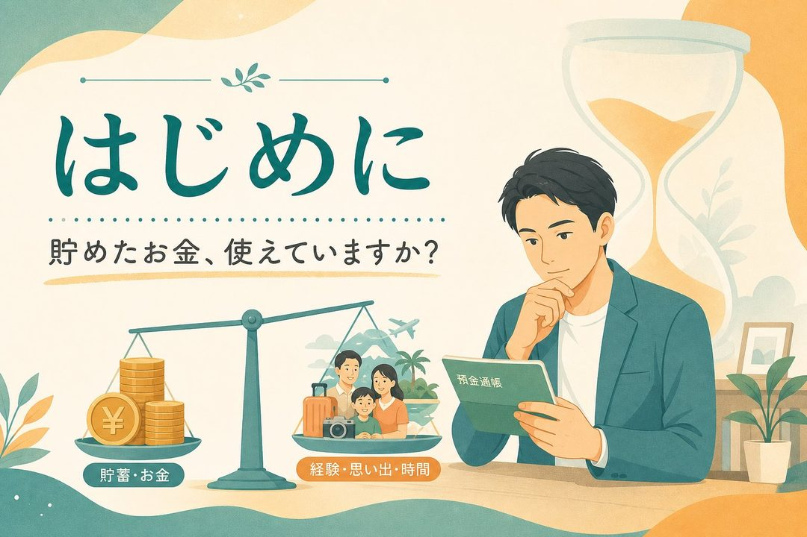
はじめに 貯めたお金、使えていますか？
「もしものときのために」「老後が不安だから」。
そう自分に言い聞かせながら、あなたは今日もコツコツと貯金を続けているかもしれません。
銀行口座の残高が少しずつ増えていくのを見ると、ほんの少しだけ安心する。
給料日には、決まった額を貯蓄用の口座に移す。
無駄遣いはしない。
将来のために、今は我慢する。
とても真面目で、とても堅実な生き方です。
けれど、その一方で、心のどこかにこんな思いがよぎることはないでしょうか。
このお金は、いったいいつ使うのだろう。
何のために貯めているのだろう。
気づけば、貯めること自体がすっかり習慣になっていて、使う場面を思い描けなくなっている。
もしそんな感覚に少しでも心当たりがあるなら、この本はきっとあなたの役に立ちます。
本書が紹介するのは、アメリカの起業家ビル・パーキンスが書いたベストセラー『DIE WITH ZERO 人生が豊かになりすぎる究極のルール』の考え方です。
日本語版は50万部を突破し、多くの人の価値観を大きく揺さぶりました。
そのタイトルを直訳すれば「ゼロで死ね」。
少しぎょっとするかもしれません。
ですが、その真意はとてもシンプルです。
お金は死ぬときに残すものではなく、生きている間に経験へと変えて使い切るものだ、という提案なのです。
考えてみれば、私たちは「お金を貯める方法」ならたくさん教わってきました。
節約術、資産運用、老後の備え。
書店にもそうした本があふれています。
ところが「お金を上手に使い切る方法」を教わった人は、ほとんどいません。
パーキンスはこう言い切ります。
死ぬときに大金を残すのは、その分だけ働いた時間を無駄にした、つまり数年間のタダ働きをしたのと同じだ、と。
少し過激に聞こえるかもしれませんが、この言葉には、私たちがふだん見過ごしている大切な視点が隠れています。
とはいえ、本書はあなたに「貯金をやめて散財しなさい」と迫るものではありません。
著者自身、莫大な資産を持つ富裕層であり、その主張をそっくりそのまま真似すれば庶民は破産しかねない、という批判も存在します。
だからこそ本書では、この刺激的な考え方を極論として鵜呑みにするのではなく、取り入れてバランスよく実践するという姿勢を、最初から最後まで大切にしていきます。
将来への備えは、これまでどおり大事にしていい。
そのうえで、少しだけ視点を足していこう、という立場です。
この本を通してお伝えしたいのは、突き詰めれば、たった一つの許可です。
それは「あなたは、自分のためにお金を使ってもいい」という許可。
お金を使うことへの罪悪感や、漠然とした将来不安に縛られて、人生で一度きりの経験を先送りし続けていませんか。
その先送りが、いつのまにか一生続いてしまうことこそ、いちばん避けたい結末です。
これから五つの章をかけて、なぜ私たちはお金を使えないのか、経験がなぜ資産よりも価値を持つのか、年齢によって何が変わるのか、そして今日から何を始めればいいのかを、順を追って一緒に考えていきます。
難しい専門知識は一切必要ありません。
身近なエピソードと図解を手がかりに、初心者の方でも無理なく読み進められるよう工夫しました。
読み終えるころには、通帳の数字ではなく、あなた自身の人生の使いどきが、きっと見えてくるはずです。
それでは、始めましょう。
02第1章 なぜ「貯金1000万円」が後悔になるのか──お金を使えない私たちの正体
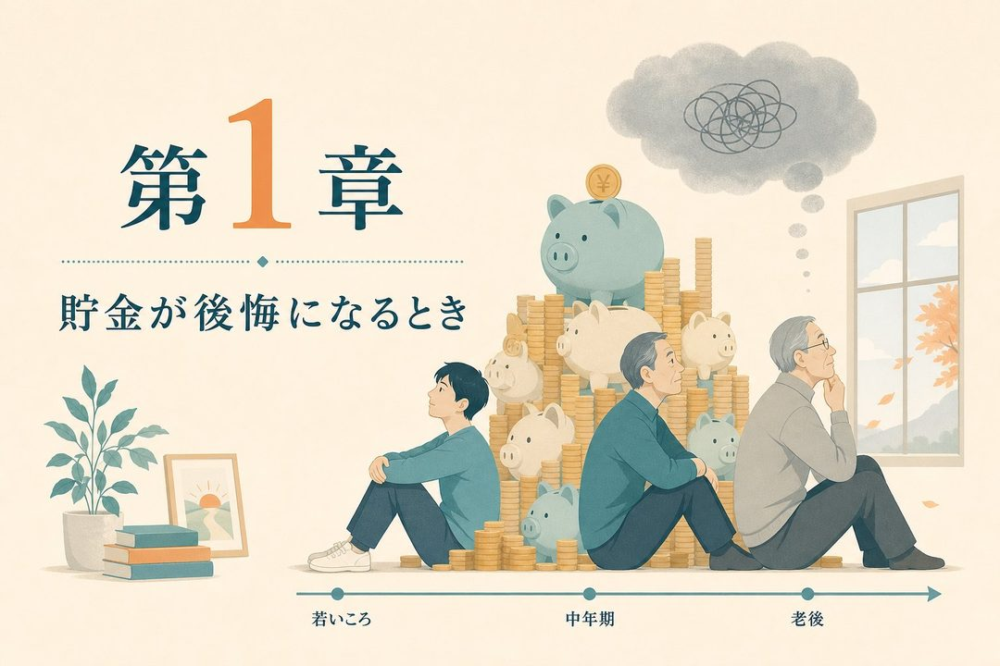
第1章 貯金が後悔になるとき
四十歳の会社員、田中さんは、ある休日の午後、ふと自分の通帳を眺めていました。
残高は着実に増えている。
新卒のころから節約を重ね、無駄遣いはほとんどしてこなかった。
飲み会も、旅行も、趣味も、「もったいないから」と何度も見送ってきた。
その甲斐あって、それなりの金額が貯まっているはずなのに、なぜか胸を張れる気がしない。
むしろ、「この二十年、自分は何を我慢してきたんだろう」という小さな後悔が、静かに顔をのぞかせるのです。
もしあなたが田中さんに少しでも共感するなら、この章はあなたのために書かれています。
ここでは、私たちがなぜお金を使えないのか、その正体をやさしく解きほぐしていきます。
自分を責めるためではありません。
まずは「使えない」という状態を正しく理解することが、そこから抜け出す第一歩になるからです。
念のためお伝えしておくと、貯金をしてきたこと自体は、まったく悪いことではありません。
むしろ、多くの人ができずにいる立派な行動です。
問題は、その堅実さに、いつのまにか「使えなさ」という別の性質がくっついてしまい、二つが分かちがたく結びついてしまうことにあります。
本当は、しっかり貯めることと、上手に使うことは、両立できるはずのものです。
この章のゴールは、あなたから貯める力を奪うことではなく、そこに使う力を少しだけ足して、両輪でお金と付き合えるようになることです。
お金を使うのが怖い、という感情の正体
「お金が減るのが怖い」。
この感覚は、決してあなたの意志が弱いからでも、ケチだからでもありません。
むしろ将来にきちんと備えようとする、とても健全な感覚から生まれています。
備えようとする心があるからこそ、私たちは計画的に生きられる。
それ自体は、大切な資質です。
ところがこの感覚は、しばしば行きすぎてしまいます。
心理学の世界では、お金を使えなくなる状態を指して、いわゆるお金を使えない症候群という言葉が使われることがあります。
その背景には、いくつかの心の動きがあります。
一つは、幼いころに「そんなものにお金を使うな」と否定された経験です。
子どものころに刻まれた言葉は、大人になっても消えずに残り、お金を使おうとするたびに、小さなブレーキをかけてきます。
もう一つは、「自分なんかにお金を使う価値はない」という思い込みです。
心理学の世界では、お金は自己価値を映す鏡だと言われます。
つまり、お金を使うことへの抵抗は、自分自身を大切に扱えていないサインでもあるのです。
身近な例で考えてみましょう。
友人に誘われた少し高めの食事会。
行けば楽しいとわかっているのに、金額を見たとたんに気が引けて、「今回はやめておく」と断ってしまう。
あるいは、ずっと欲しかった品を前にして、何度もカートに入れては、結局そっと画面を閉じてしまう。
こうした場面で私たちの心を止めているのは、冷静な計算ではありません。
「使ったら取り返しがつかない」という、漠然とした恐れです。
そしてその恐れは、断るたびに「やっぱり我慢が正解だった」という誤った学習を重ね、少しずつ強くなっていきます。
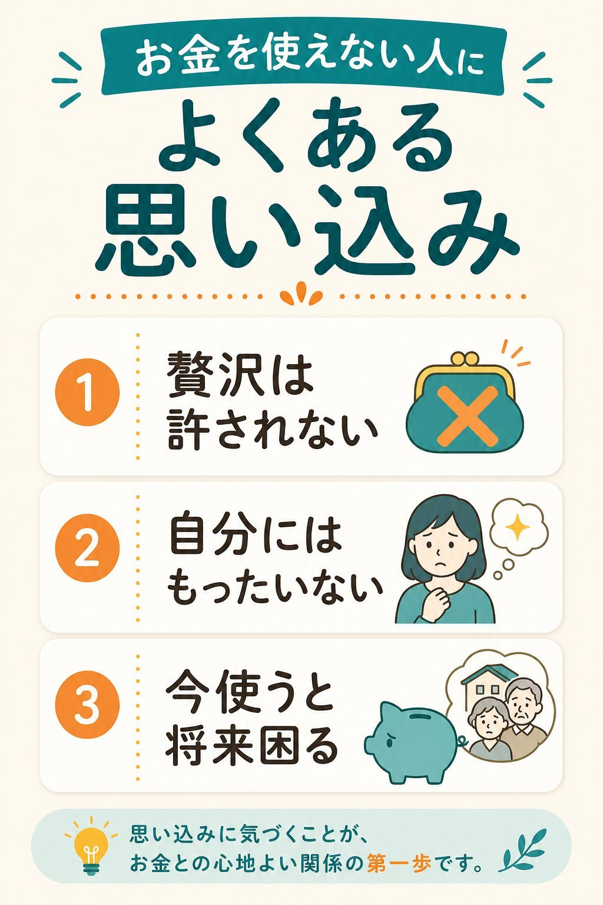
お金を使えない人によくある思い込み
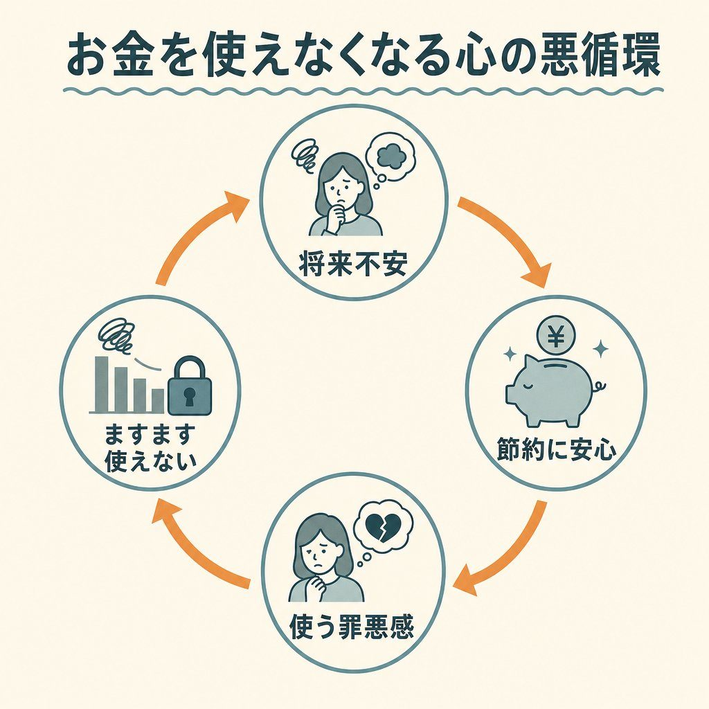
お金を使えなくなる心の悪循環
さらに厄介なのは、この不安が論理ではなく、生存本能のレベルで刻まれていることです。
頭では「これだけあれば当面は大丈夫」とわかっていても、体のどこかが「まだ足りない、もっと備えろ」と反応してしまう。
だから、いくら貯めても、なかなか安心にはたどり着けません。
目標額を達成しても、次はもっと高い目標が見えてきて、安心の基準は際限なく上がっていきます。
これは、あなただけの問題ではなく、多くの人が陥る自然な心の働きです。
ここで大切なのは、この感情をむやみに責めないことです。
怖いと感じるのは自然なことだと、まず認める。
そのうえで、少しずつ付き合い方を変えていけばいいのです。
感情を否定するのではなく、理解することが、変化のはじまりになります。
貯めることが目的になっていないか
私たちはいつのまにか、「貯める」こと自体を人生のゴールにしてしまいがちです。
本来、お金は、何かを実現するための手段のはずでした。
旅行に行くため、学ぶため、大切な人と時間を過ごすため。
お金はそのための道具でした。
ところが、貯金額を増やすことが安心の源になると、その手段と目的が、いつのまにか入れ替わってしまいます。
数字が増えることそのものが目的になり、その数字を減らす行為、つまりお金を使うことが、まるで失敗のように感じられてしまうのです。
貯金が趣味のようになると、使うタイミングは永遠にやってきません。
「もう少し貯まってから」「もう少し余裕ができてから」「来年になったら」。
そう先延ばしにしているうちに、気づけば十年、二十年が過ぎている。
そしてパーキンスが鋭く指摘するのは、次の逆説です。
一番貯金があるときが、一番後悔が大きいときかもしれない、と。
人生の終わりに近づいて、使い切れなかった大金を前にしたとき、人は初めて、我慢してきた時間の重さに気づくのです。
試しに、自分にこう問いかけてみてください。
「この貯金を、いつ、何に使う予定だろうか」。
すぐに具体的な答えが出てくるなら、あなたのお金は、ちゃんと目的につながっています。
けれど、「とりあえず不安だから」「なんとなく安心だから」という以上の答えが出てこないなら、注意が必要かもしれません。
目的のない貯金は、ゴールのないマラソンのようなものです。
走っても走っても、達成感にはたどり着けず、ただ疲れだけがたまっていく。
本来ゴールであるはずの「豊かな経験」を、いつまでも先の景色のまま、置き去りにしてしまうのです。
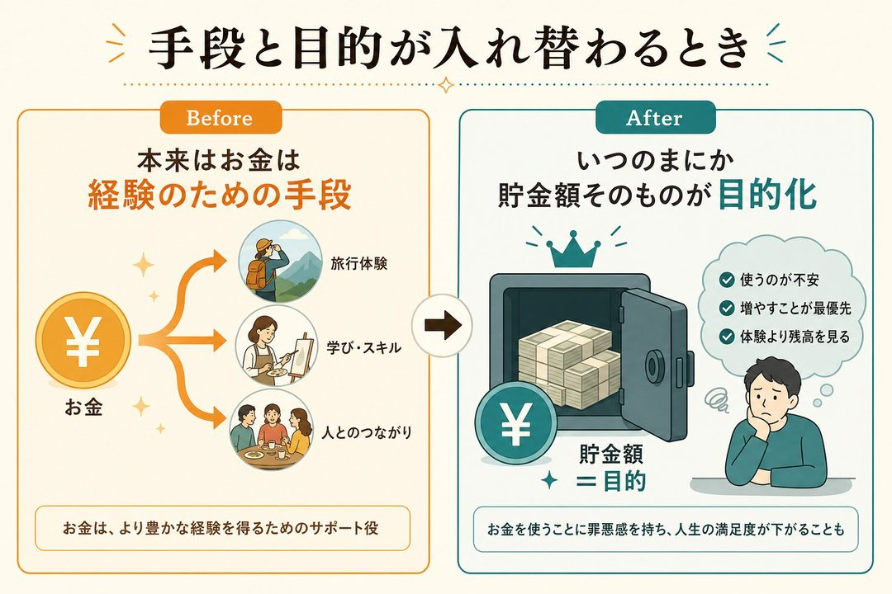
手段と目的が入れ替わるとき
なぜ後悔がそれほど大きくなるのでしょうか。
それは、貯めたお金の裏側には、あなたが働いて費やした膨大な時間が眠っているからです。
残業した夜、休日出勤した週末、気の進まない仕事を我慢した日々。
お金とは、あなたの時間と労力を交換して得た、いわば人生のエネルギーそのものです。
それは、あなたの命の時間の一部を、形を変えて保存したものだと言ってもいいでしょう。
使われないまま口座に眠り続けるお金は、活かされなかったあなたの時間の分身なのです。
だからこそ、使われずに残ったお金には、独特の切なさがつきまといます。
死ぬときにお金を残すのは「タダ働き」と同じ
ここで、本書の中でもとりわけ衝撃的な再定義を紹介します。
パーキンスはこう言います。
死ぬときにお金を残すのは、数年間のタダ働きをしたのと同じだ、と。
考えてみてください。
もしあなたが生涯で使い切れないほどのお金を残して亡くなったとします。
その残されたお金は、あなたがそれを稼ぐために働いた時間の結晶です。
もし最後まで使われないのなら、その分の時間は、いったい何のために差し出したのでしょうか。
給料をもらいながらも、そのお金を一度も自分の人生のために使わなかったのなら、その労働は、実質的にタダ働きをしたのと変わらない、というのがパーキンスの主張です。
たとえば、生涯で二千万円を使い切れずに残したとして、それがあなたの年収の数年分にあたるのなら、あなたはその数年間、報われないまま働いていたことになる、という理屈です。
この再定義が鋭いのは、「お金」と「時間」を一本の線でつないでいる点です。
私たちはふだん、通帳の残高と、自分の残りの人生の時間を、まったく別のものとして考えています。
ところが実際には、その残高は、あなたが差し出した時間を数字に置き換えたものにほかなりません。
だとすれば、使い切れずに残った金額は、そのまま「取り戻せなかった時間」の量でもあるのです。
この視点に立つと、「もっと貯めなければ」という思いの裏側に、「もっと働かなければ」という前提が隠れていることに気づきます。
貯めすぎは、知らず知らずのうちに、自分の時間を過剰に差し出し続けることでもあるのです。
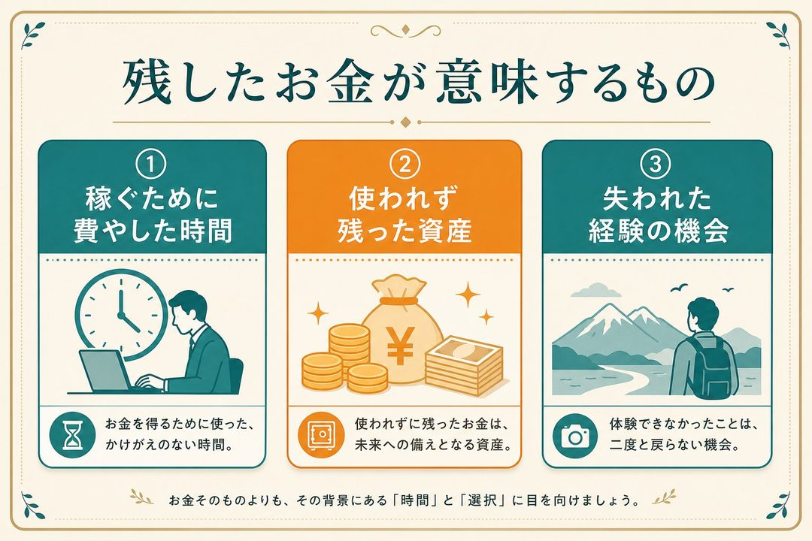
残したお金が意味するもの
もちろん、これはあくまで極端な思考実験です。
実際には、いつ病気になるか、いつまで生きるかは誰にもわかりませんから、予期せぬ出費や長生きのリスクに備えて、ある程度の余裕を持つことは絶対に欠かせません。
パーキンスも、備えを一切するなとは言っていません。
ここで受け取ってほしいのは、「一円も残すな」という命令ではなく、貯めたお金には使われなかった時間の重みがあるという気づきです。
お金を眠らせ続けることには、目に見えないコストがある。
使えたはずの経験を、そのつど手放しているのと同じなのです。
そのことを一度でも意識するだけで、お金との向き合い方は、少しずつ変わり始めます。
「ゼロで死ぬ」が本当に意味すること
では、本書のタイトルにもなっている「ゼロで死ぬ」とは、具体的に何を意味するのでしょうか。
それは、貯め込んだ資産をただ守り続けるのではなく、生きている間に経験へと変えて使い切ることを、人生の目標のひとつに据える、という発想です。
ここで、どうしても誤解してほしくないことがあります。
それは、これが「浪費のすすめ」では決してない、ということです。
ゼロで死ぬとは、後先を考えずにお金を使い果たすことでも、借金をして遊び回ることでもありません。
むしろ、その正反対です。
限りある人生の時間の中で、いつ・何に・どれだけ使えば、自分の人生が最も豊かになるかを、真剣に設計する。
ある意味で、ただ漫然と貯め続けること以上に、緻密な計画と自分への理解が求められる、大人の生き方なのです。
なぜ、あえて「ゼロ」という極端な言葉を使うのでしょうか。
それは、私たちの心にかかった強すぎるブレーキを、いったん反対側まで振り切って考えてみるためです。
「一円でも多く残そう」という発想のままでは、私たちはいつまでも使いどきを見つけられません。
そこで、「使い切ることを目標にしたら、いったい何が起きるだろう」と、思考の出発点をあえて逆にしてみる。
すると、これまで見えなかった選択肢が、次々と姿を現します。
もちろん、実際にぴったりゼロを目指す必要はありません。
大切なのは、その極端な問いが、凝り固まった価値観をやわらかくほぐしてくれる、という点なのです。
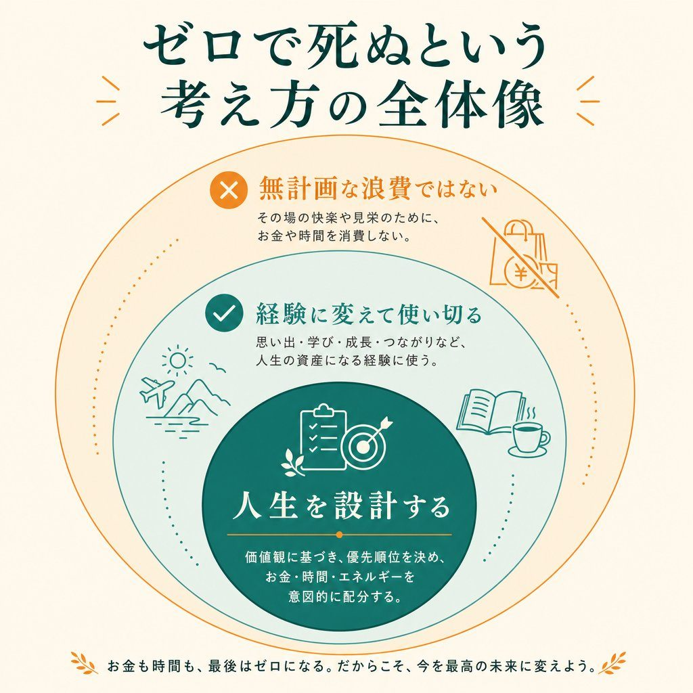
ゼロで死ぬという考え方の全体像
この章で、まずは一つだけ心に留めてほしいことがあります。
それは、あなたが感じている「使えなさ」は、決して欠点ではない、ということです。
それは堅実さの裏返しであり、これから人生を設計していくうえで、むしろ大切な資質でもあります。
ただ、その堅実さが行きすぎて、人生の使いどきまで逃してしまうのは、あまりにもったいない。
ブレーキをかける力があるなら、あとは少しだけアクセルを踏む勇気を足せばいいのです。
今日からできる小さな一歩は、通帳の残高を「安心の量」ではなく、「これから経験に変えられる可能性の量」として、眺め直してみることです。
同じ数字でも、見え方が変わるだけで、明日の選択は少しずつ変わっていきます。
次の章では、そのお金をいったい何に変えるべきか、その最も確かな答えのひとつである「思い出づくり」について、じっくり考えていきましょう。
03第2章 一番大切な仕事は「思い出づくり」──記憶の配当という考え方
第2章 思い出づくりという仕事
学生時代の友人と行った旅行、子どもが小さかったころの何気ない休日、思い切って挑戦した習い事。
ふとした瞬間に、そうした記憶が、心をあたたかくしてくれることがあります。
写真を見返したり、当時を知る誰かと話したりするたびに、そのときの空気までよみがえってくる。
一方で、去年少し奮発して買った家電のことを、何度も幸せな気持ちで思い出す、という人は、あまりいないでしょう。
この違いこそが、本書の第二の核心です。
パーキンスは断言します。
人生でしなければならない、いちばん大切な仕事は思い出づくりである、と。
少し大げさに聞こえるかもしれません。
けれど、人生の最後に手元に残るのは、資産の残高ではなく、経験の記憶だけなのだとしたら、この言葉はとても現実的な指針になります。
この章では、なぜ経験がそれほどまでに価値を持つのか、そして「記憶の配当」という魅力的な考え方を、じっくり見ていきます。
前の章で、「お金を経験に変える」という言い方をしました。
この章は、その「経験」がなぜ、これほどまでに大切なのかを、じっくり掘り下げる章でもあります。
ここを腑に落とすことができれば、お金を使うことへの罪悪感は、ずいぶん軽くなるはずです。
なぜなら、経験への支出は、消えてなくなる浪費ではなく、あなたの人生に長く残り続ける、確かな価値への投資なのだと、心から納得できるようになるからです。
数字ではなく、あなたの心が受け取るリターンに、目を向けてみましょう。
モノより経験にお金を使うべき理由
まず知っておきたいのは、心理学の研究が繰り返し示している一つの事実です。
それは、人はモノよりも経験にお金を使ったほうが、長期的な幸福度が高いということです。
これは感覚的な話ではなく、多くの調査で確かめられている、比較的しっかりした知見です。
新しいモノを買ったときの喜びは、たしかに大きなものです。
憧れの品を手に入れた瞬間の高揚感は、何ものにも代えがたい。
けれど、その喜びは、驚くほど早く色あせていきます。
手に入れた瞬間が幸福のピークで、あとは少しずつ当たり前になり、やがて日常の風景に溶けていく。
これを心理学では慣れと呼びます。
どんなにうれしかった買い物も、数か月もすれば、それがある生活が普通になってしまうのです。
一方、経験はどうでしょうか。
旅行や挑戦は、その最中の喜びだけでなく、計画を立てる時間のわくわくや、準備するプロセスの楽しさ、そして終わったあとに何度も思い出す喜びまで含んでいます。
つまり、経験は幸福の「入り口」が長く、「出口」もないのです。
なぜモノへの喜びは早く薄れ、経験への喜びは長く続くのでしょうか。
理由の一つは、モノは他人と比べやすい、という点にあります。
せっかく手に入れた品も、もっと良いものを持つ人を見た瞬間に、色あせて見えてしまう。
比較の対象が、次々と現れてしまうのです。
一方、経験は、あなただけのものです。
あの日、あの場所で、あの人と過ごした時間は、他の誰の経験とも比べようがありません。
比較から自由であるがゆえに、経験の価値は、時間がたっても目減りしないのです。
だからこそ、同じ金額を使うなら、比べて消耗するモノよりも、比べようのない経験を選ぶほうが、心は満たされやすくなります。
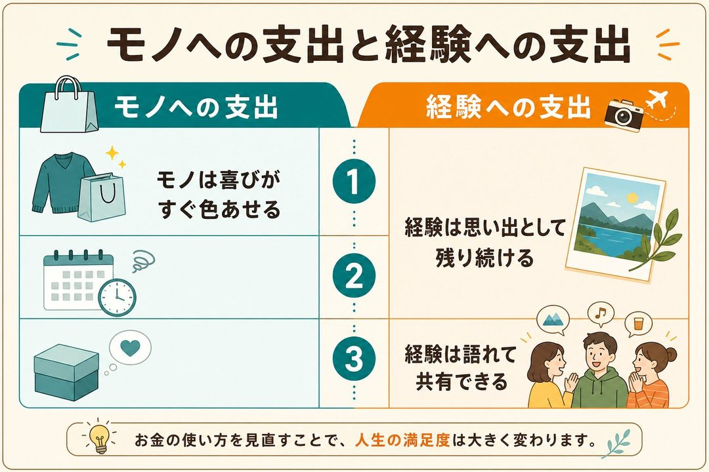
モノへの支出と経験への支出
さらに経験には、モノにはない、もう一つの大切な性質があります。
それは、経験があなたという人間の一部になっていく、ということです。
誰かと分かち合った経験は、その人とのつながりを深めます。
困難を乗り越えた挑戦は、自信となって人格に刻まれます。
私たちは、持っているモノではなく、してきた経験によって形づくられていくのです。
パーキンスの言葉を借りれば、どんな大金を積まれても、あの旅の思い出を消そうとは思わない。
経験とは、それほどまでに、あなただけの、決して奪われることのない財産なのです。
だからこそ、限られたお金を何に使うか迷ったときは、モノよりも経験を選ぶことが、後悔の少ない選択になります。
記憶の配当という考え方
ここで本書の最も魅力的な概念、記憶の配当を紹介します。
英語ではメモリーディビデンドと呼ばれます。
少し不思議な言葉ですが、その仕組みは、一度わかってしまえばとてもシンプルで、しかも心強いものです。
株式などに投資すると、配当という形で、定期的にお金を受け取れることがあります。
元本を持っているだけで、そこから継続的にリターンが生まれる。
パーキンスは、経験もこれとまったく同じだと考えました。
ある経験にお金を使うと、その楽しさは、その場かぎりで終わるわけではありません。
あとになって、何度も思い出すたびに、そのつど小さな満足感、つまり配当を、受け取り続けられるのです。
経験は一度きりの消費ではなく、その後もずっとリターンを生み続ける、いわば人生への投資なのです。
この考え方は、お金を使うときの罪悪感を、和らげてくれる効果もあります。
多くの人は、経験にお金を使うとき、「その場かぎりで消えてしまうもの」にお金を払っている、という感覚を持ちます。
だから、形の残るモノよりも、もったいなく感じてしまう。
けれど、記憶の配当という視点に立てば、話はまったく変わります。
経験に払ったお金は、消えて終わりではなく、その後何十年にもわたって、あなたに幸福を配り続ける「元手」なのです。
むしろ、形が残らないからこそ、経験はあなたの内側に深く根を下ろし、心の財産として蓄えられていきます。
お金を経験に変えることは、消費ではなく、幸福への投資なのだと考えてみてください。
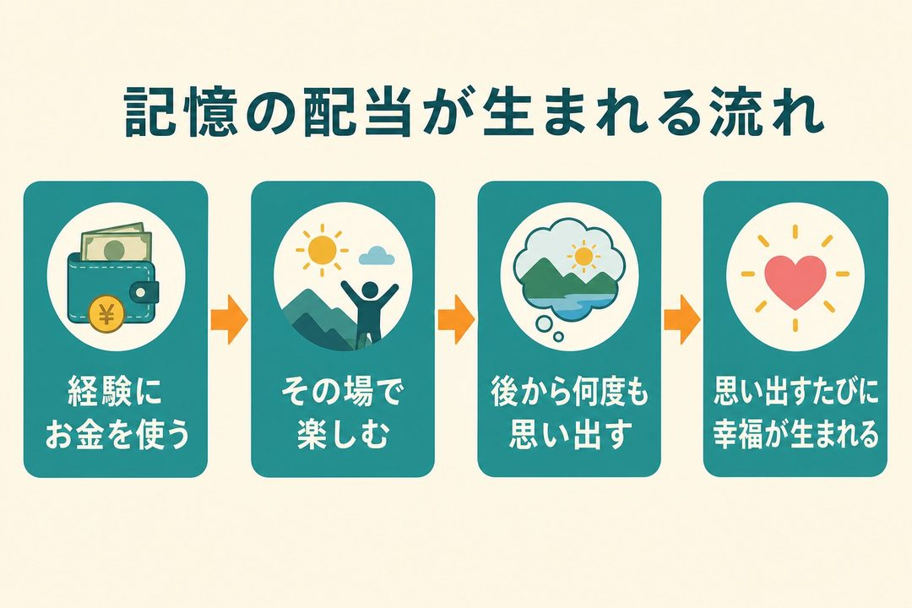
記憶の配当が生まれる流れ
たとえば、若いころに友人と行った旅行を思い出してみてください。
その旅そのものは、数日で終わったかもしれません。
使ったお金も、その場で消えたように見えます。
けれど、その後の人生で、写真を見返したり、当時の話で仲間と盛り上がったり、ふとした瞬間に思い返したりするたびに、あなたは何度も、その旅の幸せを味わってきたはずです。
数日間の経験が、何十年にもわたって幸福を配り続ける。
これが記憶の配当です。
経験は消費して終わりではなく、繰り返し幸福を生み出す資産なのだと考えると、お金を経験に使うことが、少しも無駄には思えなくなってきます。
経験は早く始めるほど得をする
記憶の配当という考え方には、とても実践的で、そして少し切実な結論が続きます。
それは、経験は早く始めるほど得をするということです。
理由は、配当の仕組みそのものにあります。
若いうちに積んだ経験は、その後の長い人生を通じて、何度も何度も思い出すチャンスがあります。
つまり、配当を受け取れる期間が長いのです。
二十代で得た経験は、そこから六十年分の思い出す時間を持ちます。
一方、六十代で得た経験は、思い出せる時間がどうしても短くなります。
同じ内容の経験でも、早く積んだほうが、生涯にわたって受け取れる幸福の総量は、はるかに大きくなるのです。
これは、投資を早く始めた人ほど複利の効果を大きく受けられるのと、よく似ています。
もう一つ、早く始めることには、見落とされがちな利点があります。
それは、経験が「その人の土台」をつくり、その後の人生の選択肢を広げてくれる、という点です。
若いうちに海外に出た経験が、その後の仕事の幅を広げることもあります。
学生時代に打ち込んだ趣味が、生涯の友人や、思わぬ収入源につながることもあります。
経験は、思い出として楽しめるだけでなく、次の可能性への扉を開く鍵にもなるのです。
だとすれば、経験を先送りすることは、思い出す時間を失うだけでなく、その経験が開いたはずの未来の扉を、閉じたままにすることでもあります。
若い時期の経験ほど、この「扉を開く力」が大きいことも、覚えておいてください。
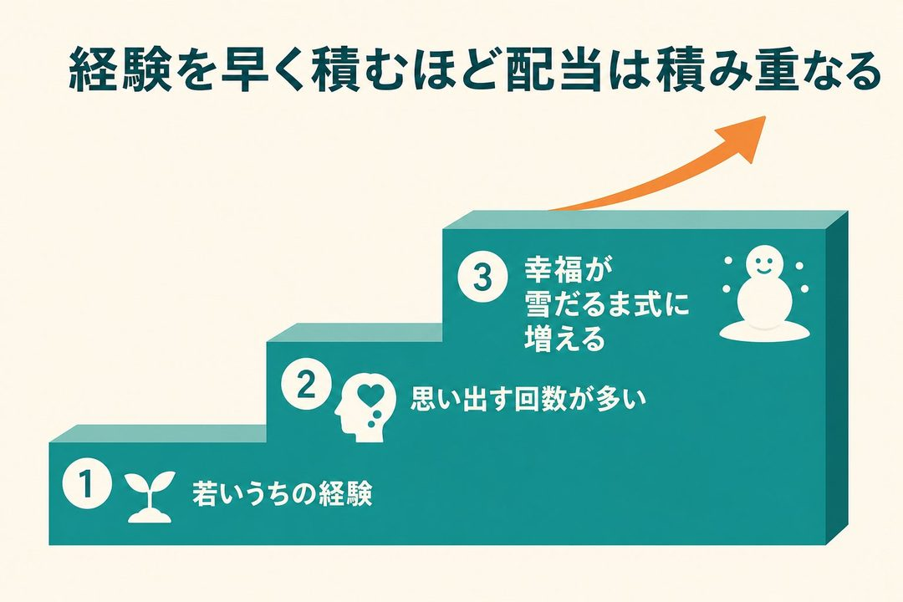
経験を早く積むほど配当は積み重なる
これこそが、パーキンスが掲げる一刻も早く経験にお金を使うというルールの、確かな根拠です。
「お金がもっと貯まってから」「もっと余裕ができてから」と経験を先送りするのは、実は、受け取れたはずの配当をみすみす逃す、もったいない選択なのです。
もちろん、無理な借金をしてまで遊べ、という話ではありません。
生活の土台は守らなければなりません。
ただ、経験への支出を、いつも「いつか」に回し続けることには、目に見えない機会損失があるのだと、心に留めておいてください。
今この年齢でしか味わえない経験には、値札には書かれていない、特別な価値があるのです。
思い出は「複利」で増えていく
記憶の配当には、もう一つ、見逃せない性質があります。
それは、思い出が複利のように、絡み合いながら増えていく、ということです。
複利とは、利息が利息を生んで、雪だるま式に増えていく仕組みのことです。
経験にも、これと似た現象が起こります。
一つの経験が、次の経験を呼び込むことがあるのです。
ある旅行がきっかけで新しい趣味が生まれ、その趣味が新しい仲間との出会いを連れてくる。
その出会いが、また別の挑戦へとつながっていく。
こうして経験は、一つずつ独立して存在するのではなく、互いに手を取り合って、あなたの人生という物語を、少しずつ厚みのあるものにしていきます。
この複利の効果は、人と分かち合うことで、さらに大きくなります。
一人で味わった経験も素晴らしいものですが、誰かと共有した経験は、その相手の記憶の中にも配当を生み、二人が会うたびに、思い出として何度もよみがえります。
家族旅行の思い出は、あなただけでなく、子どもの心にも一生残り続けるでしょう。
つまり、一つの経験が生み出す幸福の総量は、関わった人の数だけ、掛け算で増えていくのです。
大切な人と過ごす経験に、少し多めにお金を使うことには、こうした確かな理由があります。
あなたが払った費用は、その場にいた全員の、生涯にわたる記憶の配当へと姿を変えていくのです。
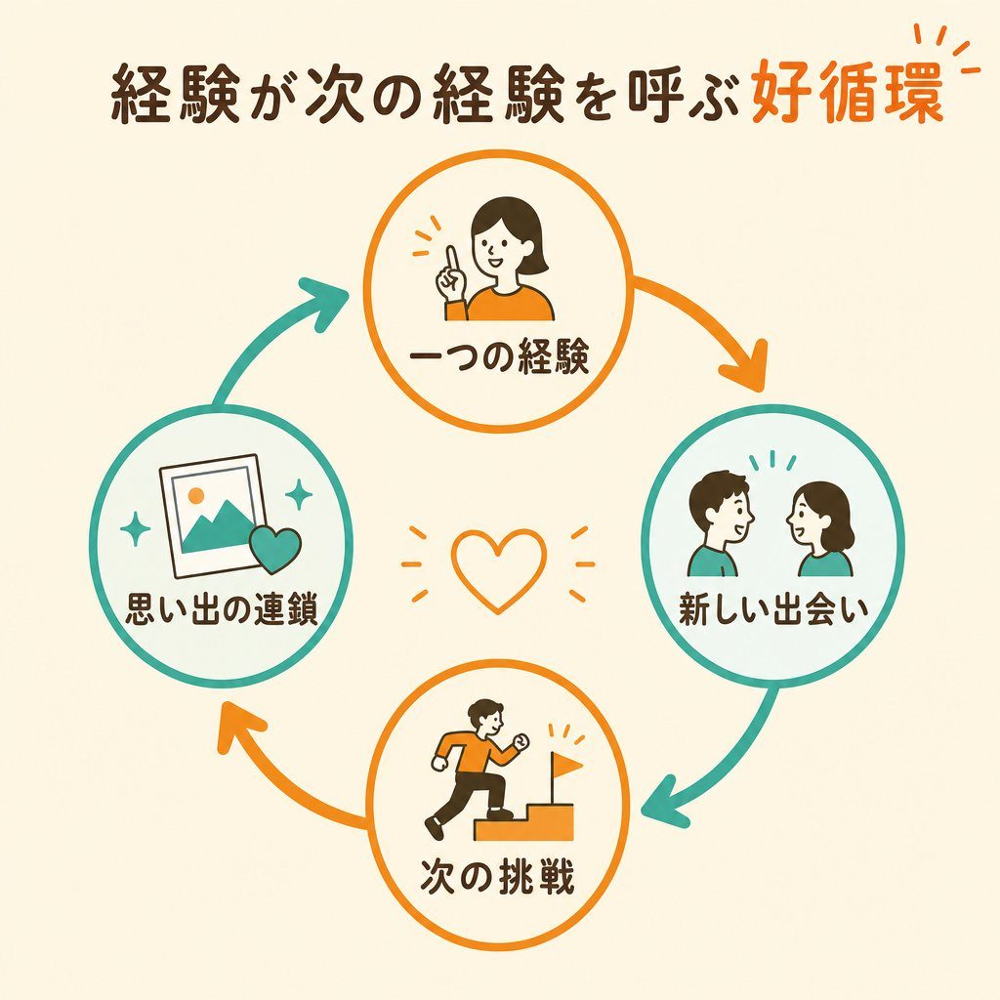
経験が次の経験を呼ぶ好循環
さらに、いくつもの思い出は、年を重ねるほど、互いに結びついて豊かな彩りを増していきます。
若いころの経験の意味が、ずっとあとになってから、しみじみと理解できることもあるでしょう。
人生の後半に差しかかって過去を振り返ったとき、そうした思い出の連なりこそが、あなたの人生そのものになっているのです。
財産のように数字で測ることはできませんが、確かにそこにある、かけがえのない蓄えです。
この章のまとめとして、今日からできる小さな一歩を提案します。
それは、これまでの人生で「お金を使ってよかった」と心から思える経験を、三つ書き出してみることです。
おそらくそのリストには、高価なモノよりも、誰かと過ごした時間や、勇気を出して挑戦した出来事が並ぶはずです。
その手応えを感じられたら、次は「これから経験したいこと」を一つ、思い浮かべてみてください。
それが、あなたの記憶の配当を増やしていく、確かなはじめの一歩になります。
04第3章 お金・時間・健康は年齢で変わる──3つの資源の最適化
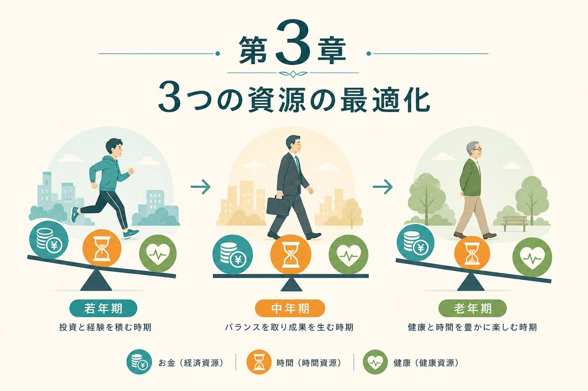
第3章 3つの資源の最適化
「若いころは時間はあったけれど、お金がなかった」。
「今はお金に少し余裕ができたけれど、時間がまるでない」。
多くの人が、人生のどこかで、こうした実感を抱きます。
学生時代は暇を持てあましていたのに、社会に出て収入が増えたとたん、自由な時間が消えてなくなった。
そんな覚えはないでしょうか。
これは、あなただけに起きている偶然ではありません。
私たちの人生には、決まったパターンで移り変わる、三つの資源があるのです。
その三つとは、お金・時間・健康です。
この章では、この三つの資源が年齢とともにどう変化していくのか、そしてそれをどう組み合わせれば、人生がより豊かになるのかを考えていきます。
ここを理解すると、これまで漠然としていた「今、何にお金を使うべきか」という問いに、はっきりとした輪郭が見えてきます。
本書の考え方の中でも、とりわけ実生活に直結する、大切な章です。
前の章までは、主に「お金と経験」の関係を見てきました。
ここに「時間」と「健康」という二つの視点を加えると、話は一気に立体的になります。
というのも、お金を経験に変えられるかどうかは、実は、そのときに時間と健康が十分にあるかどうかに、大きく左右されるからです。
いくらお金があっても、時間がなければ旅には出られませんし、健康を失えば、その旅を楽しむこともできません。
三つの資源をセットで考えることこそ、後悔しない使いどきを見つけるための、いちばんの土台になるのです。
人生を左右する3つの資源
まず、三つの資源それぞれの性質を、ひとつずつ確認していきましょう。
お金は、貯めたり、増やしたり、借りたりすることができる、三つの中では比較的コントロールしやすい資源です。
工夫しだいで、あとから取り戻すこともできます。
時間はどうでしょうか。
時間は、誰にでも一日二十四時間、平等に与えられていますが、決して増やすことはできず、刻一刻と、静かに減り続けています。
そして健康は、経験そのものを楽しむための土台であり、多くの場合、年齢とともに少しずつ、確実に失われていきます。
この三つの中で、私たちがふだん最も強く意識しているのは、おそらくお金でしょう。
銀行口座の残高は、いつでも数字で確認できます。
ところが、残りの時間や、失われつつある健康は、数字ではっきり示されることがありません。
だから、つい後回しにしてしまう。
ここに、大きな落とし穴があります。
目に見えるお金ばかりを気にかけて、目に見えない時間と健康を、知らないうちにすり減らしてしまうのです。
本当は、あとから取り戻せないぶん、時間と健康のほうが、はるかに貴重な資源かもしれません。
お金の残高だけでなく、時間と健康の「残高」にも、ときどき目を向ける習慣を持ちたいものです。
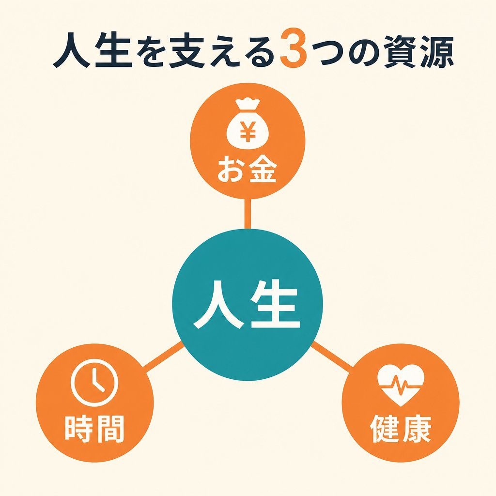
人生を支える3つの資源
ここで重要なのは、この三つが、同時にすべて豊かにそろうことは、人生においてめったにない、という事実です。
多くの場合、どれかが豊富にあるときは、別のどれかが不足しています。
お金があれば時間がなく、時間があればお金がなく、両方あれば健康が心もとない。
そして、価値ある経験をするには、たいていこの三つが、ある程度そろっている必要があります。
海外旅行には、お金も、まとまった時間も、旅を楽しむ体力も要ります。
だからこそ私たちは、足りない資源を、余っている資源で補うという工夫を、意識する必要があるのです。
人生設計とは、突き詰めれば、この三つの資源をやりくりし続ける作業だと言ってもいいでしょう。
年齢によって過不足は入れ替わる
では、三つの資源は、年齢とともに具体的にどう変わっていくのでしょうか。
おおまかに、人生を三つの時期に分けて、眺めてみましょう。
若い時期、たとえば二十代から三十代前半は、時間と健康が豊富にあります。
徹夜もできるし、多少の無理も体が受け止めてくれる。
自由に使える時間も、比較的たっぷりあります。
けれど、多くの人は、この時期にお金がありません。
中年期、およそ四十代から五十代になると、キャリアを重ねて収入が増え、お金に余裕が出てきます。
健康も、まだそれなりに保たれています。
ところが今度は、仕事の責任が重くなり、家庭のこともあって、自由な時間がほとんどなくなってしまう。
そして老年期を迎えると、退職して、ようやくたっぷりの時間ができます。
長年かけて貯めてきたお金もある。
しかし、皮肉なことに、今度は健康と体力が、思うように言うことを聞いてくれなくなっているのです。
この落とし穴が怖いのは、日本では「健康寿命」と「平均寿命」の間に、無視できない差があることからも見て取れます。
一般に、日常生活に支障なく過ごせる健康寿命は、寿命が尽きる年齢よりも、およそ八年から十二年ほど短いと言われています。
つまり、人生の最後の十年前後は、体のどこかに不自由を抱えながら過ごす可能性が高い、ということです。
この事実を踏まえると、「自由に動ける残りの時間」は、あなたが漠然と思い描いているよりも、ずっと短いかもしれません。
だからこそ、その貴重な健康な時間を、いつ、何に使うのかを意識することが、これまで以上に大切になってくるのです。
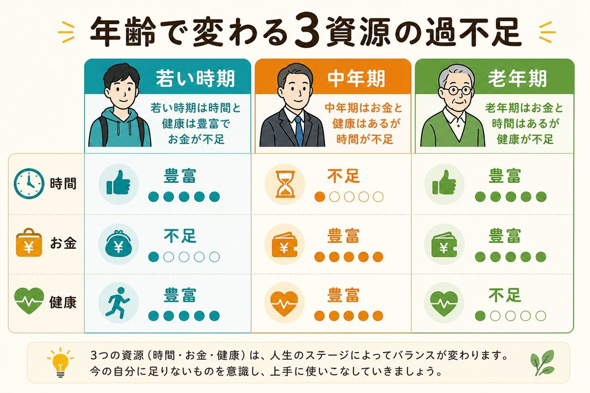
年齢で変わる3資源の過不足
この移り変わりを並べて眺めると、あることに、はっと気づかされます。
多くの人は、若いころに「お金がないから」と経験を我慢し、ひたすら老後のためにお金を貯めます。
ところが、いざお金と時間がそろう老後には、肝心の健康が、すでに失われはじめている。
せっかく苦労して貯めたお金を、経験に変えるための体力が、もう十分に残っていないのです。
貯めるタイミングと、使うタイミングが、大きくすれ違ってしまう。
これこそが、真面目に生きてきた人ほど陥りやすい、人生最大の落とし穴なのです。
経験には「賞味期限」がある
ここで、パーキンスが繰り返し強調する、もう一つの大切な考え方を紹介します。
それは、経験には賞味期限があるということです。
すべての経験を、いつでも同じように楽しめるわけではありません。
たとえば、体力を必要とする登山や、長時間の移動をともなう海外の秘境への旅、激しいスポーツやフェスへの参加。
こうした経験は、若く健康なうちにしか、十分には味わえません。
八十歳になってから富士山に登るのは、多くの人にとって難しいでしょう。
小さな子どもを抱き上げて一緒に遊べる時期にも、はっきりとした限りがあります。
子どもはあっという間に成長し、やがて親と過ごす時間よりも、友人との時間を選ぶようになります。
つまり、それぞれの経験には、それを最も豊かに楽しめる適齢期が存在するのです。
旬を過ぎてしまうと、同じ経験でも、得られる満足はぐっと小さくなってしまいます。
賞味期限があるのは、体力を使う経験だけではありません。
人との関係にも、実は期限があります。
今は当たり前のように会える両親や旧友とも、この先何回会えるかを数えてみると、意外なほど少ないことに気づきます。
たとえば、年に二回しか帰省しないなら、両親があと二十年元気でいてくれても、会えるのはおよそ四十回。
そう考えると、一回一回の時間の重みが、まるで違って見えてきます。
大切な人と過ごす経験こそ、最も賞味期限を意識すべきものかもしれません。
お金をかけるかどうかにかかわらず、「今のうちに会っておく」という選択には、あとになって効いてくる、大きな価値があるのです。
大切な人とあと何回会えるか
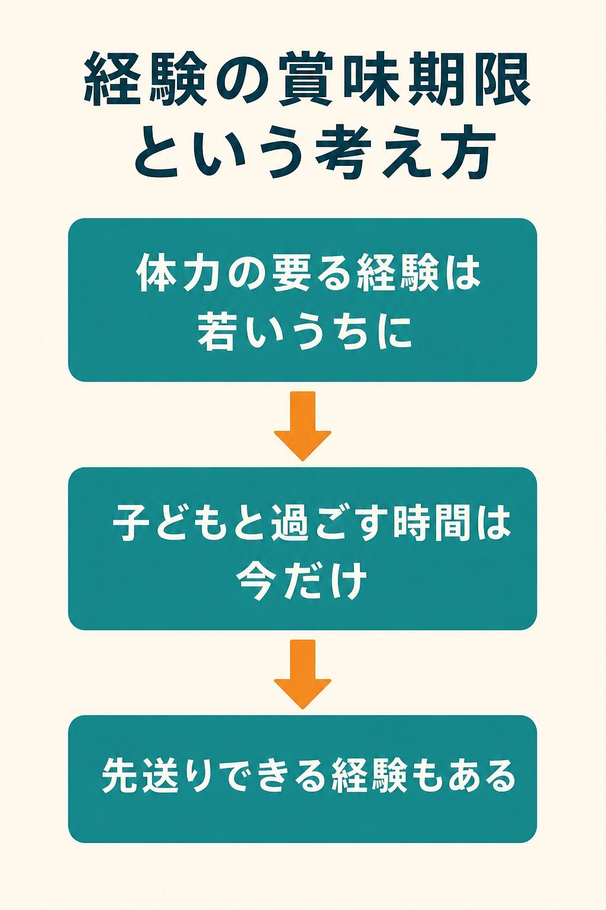
経験の賞味期限という考え方
この考え方は、お金の価値についても、新しい視点を与えてくれます。
パーキンスは、お金の価値は年齢とともに下がっていくと指摘します。
同じ百万円でも、体力にあふれた二十代が使う百万円と、体を思うように動かせない八十代が使う百万円とでは、そこから引き出せる経験の価値が、まるで違うのです。
若いときの百万円は、世界を旅する冒険にも、一生ものの挑戦にもなり得ます。
だとすれば、健康という土台がしっかりあるうちに、その土台を存分に活かせる経験へとお金を回すことには、私たちが思う以上に、大きな意味があるのです。
足りない資源を補い合う発想
三つの資源が年齢で移り変わることがわかると、そこから、とても実践的な戦略が見えてきます。
それは、足りない資源を、余っている資源で補うという発想です。
ただ我慢するのではなく、持っているものを賢く交換していく、という考え方です。
たとえば、中年期に「時間が足りない」と感じているなら、お金を使って時間を買う、という選択があります。
掃除や洗濯などの家事を、思い切って外部のサービスに任せてみる。
少し割高でも、移動時間の短い交通手段を選ぶ。
食事の準備を時短できる道具に投資する。
こうしてお金を時間に変えれば、生まれた余白の時間を、大切な人との経験や、自分を回復させる休息にあてられます。
逆に、若くて時間はあるがお金がない時期なら、時間を存分に使って工夫し、お金をあまりかけずに豊かな経験を積むこともできます。
青春18きっぷでの旅や、無料で参加できる催しなど、方法はいくらでもあります。
ここで一つ、多くの人がつまずくポイントに触れておきます。
それは、「お金で時間を買う」ことへの、根強い抵抗感です。
家事を外注するのは怠けている気がする、自分でやれば済むことにお金を払うのはもったいない。
そう感じる方は少なくありません。
けれど、少し計算してみてください。
もし一時間の家事を数千円で誰かに任せられ、その一時間を家族との経験や、心身の回復にあてられるなら、それは本当にもったいない出費でしょうか。
時間は、二度と取り戻せない資源です。
お金は、また稼ぐことができます。
取り戻せないもののために、取り戻せるものを使う。
この交換は、決して怠けではなく、資源の性質を理解した、合理的な判断なのです。
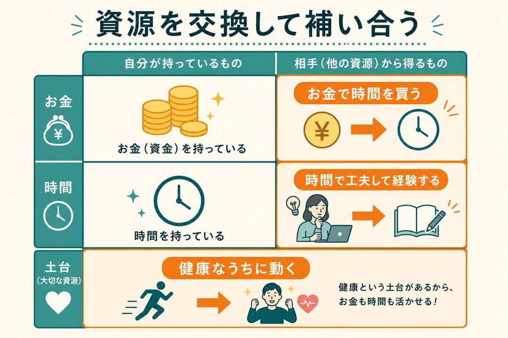
資源を交換して補い合う
この「資源の交換」という発想を持つと、お金の使い道について、ずいぶん気持ちが軽くなります。
お金を使って時間を取り戻すことは、決してわがままでも、怠けでもありません。
限りある健康な時間を、より価値の高い経験へと変えるための、賢い選択なのです。
この章のまとめとして、今日からできる小さな一歩を提案します。
それは、あなたが今、三つの資源のうち、どれが余っていて、どれが足りないのかを、実際に書き出してみることです。
三十代・四十代の多くの方は、おそらく「時間が足りない」と感じているのではないでしょうか。
もしそうなら、お金を使って時間を取り戻すという選択を、罪悪感なく、一度検討してみてください。
その一歩が、あなたの毎日に、経験のための余白を生み出してくれるはずです。
05第4章 人生を「時間割」にする──タイムバケット実践
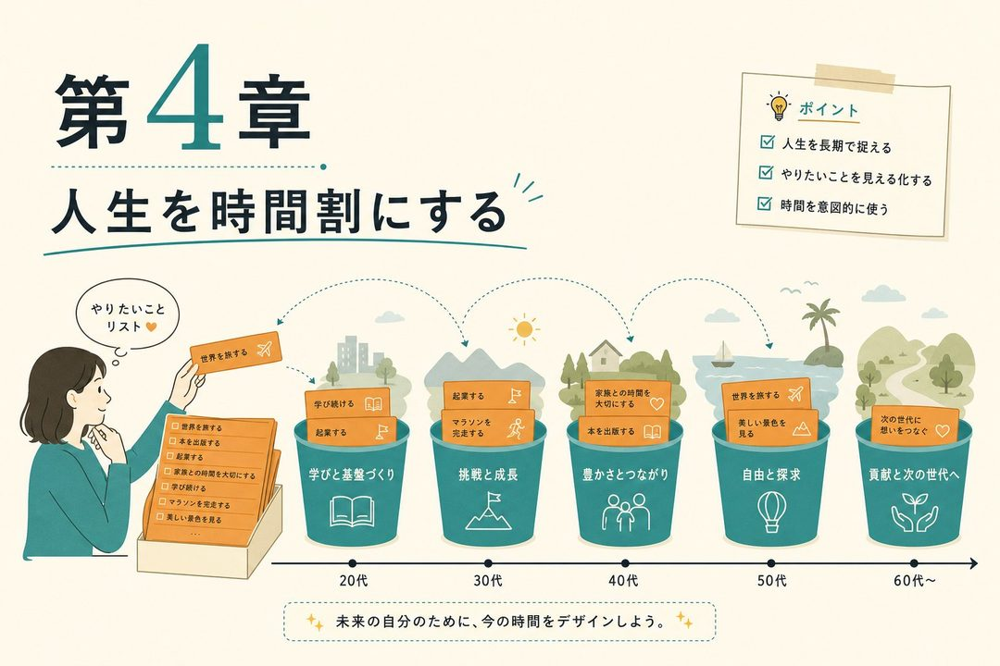
第4章 人生を時間割にする
「いつか、あの国を旅してみたい」。
「いつか、あの資格に挑戦したい」。
「いつか、家族でゆっくり過ごしたい」。
私たちは心の中に、たくさんの「いつか」を抱えています。
それは、人生を彩るはずの、大切な願いです。
ところが、この「いつか」という言葉は、実はとても危険な言葉でもあります。
なぜなら「いつか」には、具体的な期日がないからです。
期日のない願いは、たいてい実現しないまま、静かに人生の隅へと追いやられていきます。
この章では、その「いつか」を「いつ」に変えるための、とても実践的な道具を紹介します。
それがタイムバケットです。
頭の中だけで考えるのではなく、実際に手を動かしながら、あなた自身の人生の時間割をつくっていきましょう。
難しいことは何もありません。
紙とペンさえあれば、今日から始められます。
「いつか」を「いつ」に変える道具
タイムバケットとは、直訳すれば「時間のバケツ」です。
やり方はとてもシンプルで、今の年齢から人生の終わりまでを、5年から10年ごとの区切りに分けていきます。
たとえば、三十歳から三十四歳、三十五歳から三十九歳、四十歳から四十四歳、というように。
この一つひとつの区切りが、時間のバケツになります。
人生という長い時間を、いくつかの手に取れる単位に分けてあげる、というイメージです。
なぜ、一年ごとではなく、5年から10年という、少しゆったりした区切りにするのでしょうか。
理由は二つあります。
一つは、あまり細かく区切ると、計画がかえって窮屈になり、続けるのが負担になってしまうからです。
もう一つは、人生の大きな経験は、たいてい数年単位のまとまりの中で実現するものだからです。
「三十代前半のうちに」というくらいのゆるやかな幅があるほうが、現実的で、実行にも移しやすくなります。
区切りの幅は、あなたの感覚に合わせて調整してかまいません。
大切なのは、正確さではなく、人生全体をひとまず「見渡せる形」にしてみる、という点にあります。
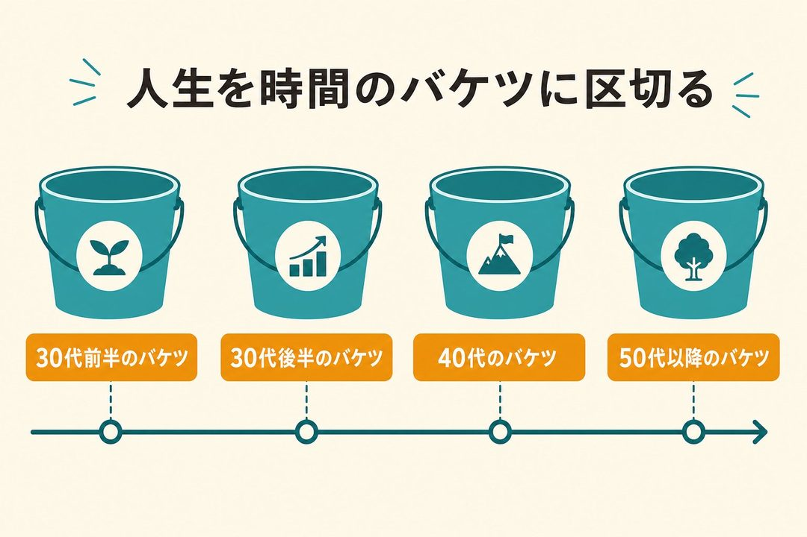
人生を時間のバケツに区切る
このように人生を目に見える形に区切ると、少し不思議なことが起こります。
これまで漠然と「まだまだ先がある」と感じていた「残りの人生」が、数えられる数の区切りとして、目の前にはっきりと立ち現れるのです。
健康に動ける時期に限れば、そのバケツは、思っていたよりずっと少ないかもしれません。
多くの人が、ここで初めて、はっと気づきます。
自由に動ける時間は、決して無限ではない、と。
少し怖い気づきかもしれませんが、これこそがタイムバケットの力です。
先延ばしをやめて、今この時期を大切にしようという気持ちを、そっと後押ししてくれるのです。
まずは紙に、あなたの年代の区切りを、いくつか書き出してみてください。
やりたいことを書き出して振り分ける
区切りをつくったら、次のステップに進みます。
死ぬまでにやりたいことを、思いつくかぎり、自由に書き出してみましょう。
行ってみたい場所、学んでみたいこと、挑戦してみたいこと、家族と一緒にやりたいこと。
大きな夢も、ささやかな願いも、恥ずかしがらずに、すべて書き出します。
この段階では、実現できるかどうか、お金が足りるかどうかを気にする必要は、まったくありません。
まずは、心の中に眠っている願いを、ぜんぶ外に出してあげることが大切です。
書き出したら、いよいよ本番です。
それぞれの願いを、「いつ実現したいか」「いつなら実現できそうか」を考えながら、先ほどつくったバケツに、一つずつ振り分けていきます。
ここが、タイムバケットの心臓部にあたる作業です。
やりたいことを書き出すとき、多くの人が「そんなにたくさん思いつかない」と戸惑います。
これは、ふだんから願いにフタをしてきた人ほど、起こりやすい反応です。
そんなときは、切り口を変えて考えてみてください。
「お金と時間が無限にあったら、何をするだろう」「子どものころ、憧れていたことは何だろう」「まわりの人がやっていて、うらやましいと感じたことは何だろう」。
こうした問いは、心の奥にしまい込んだ願いを、そっと引き出してくれます。
ここで大切なのは、他人の目を気にせず、自分が本当にやりたいことを書くことです。
世間体のための項目ではなく、あなた自身の心が動くことを、正直に書き出してみてください。
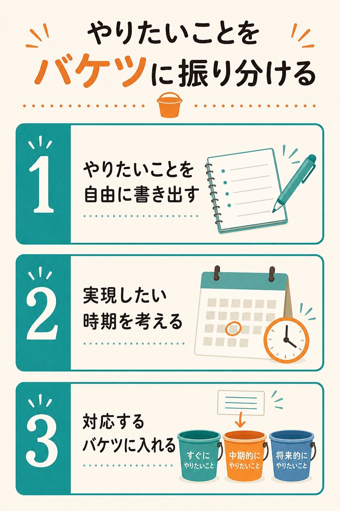
やりたいことをバケツに振り分ける
振り分けるときには、一つの大原則があります。
それは、体力の要る経験ほど、若いバケツに入れるということです。
前の章で見た「経験の賞味期限」を、ここで思い出してください。
激しいスポーツ、長距離のバックパック旅行、体力勝負の冒険。
こうした経験は、健康で体力のあるうちにしかできません。
ですから、これらをうっかり老後のバケツに入れてしまうのは、避けなければなりません。
逆に、ゆったりと座って楽しめる美術鑑賞や、近場の温泉でのんびり過ごす旅行などは、年齢を重ねてからのバケツに入れても、十分に楽しめるでしょう。
経験の性質と、体力の要不要を見きわめながら、振り分けていくのがコツです。
体力の要る経験は早いバケツへ
なぜ、この振り分けが、それほど大切なのでしょうか。
それは、多くの人が、良かれと思って、無意識にやってしまう失敗があるからです。
その失敗とは、お金のかかる大きな経験を、すべて「お金が貯まっているはずの老後」に、先送りしてしまうことです。
一見すると、とても合理的な判断に思えます。
お金は、若いころより老後のほうが多いのだから、費用のかかる大きな夢は、余裕のある老後にとっておこう、と。
ところが、これこそが、これまでの章で見てきた、最大の落とし穴なのです。
老後にたっぷりお金があっても、その経験を心から楽しむための健康や体力が残っていなければ、そのお金は宝の持ち腐れになってしまいます。
お金はあるのに、それを使う力がないという、人生で最も避けたい状況に、自ら足を踏み入れてしまうことになるのです。
ここで、お金の心配について、正直に触れておきましょう。
「若い時期のバケツに経験を入れろと言われても、そんな余裕はない」。
そう感じるのは、当然のことです。
ですが、経験には、必ずしも大金が必要なわけではありません。
同じ「若いうちに旅をする」という願いでも、豪華なホテルに泊まる旅もあれば、節約しながら各地を巡る旅もあります。
大切なのは、費用の大小ではなく、その経験を「健康なうちに味わう」ことです。
予算に合わせて、経験の形を工夫すればいい。
むしろ、お金をかけずに知恵を絞った若い日の経験ほど、あとから振り返ったときに、鮮やかな思い出として輝くことも少なくありません。
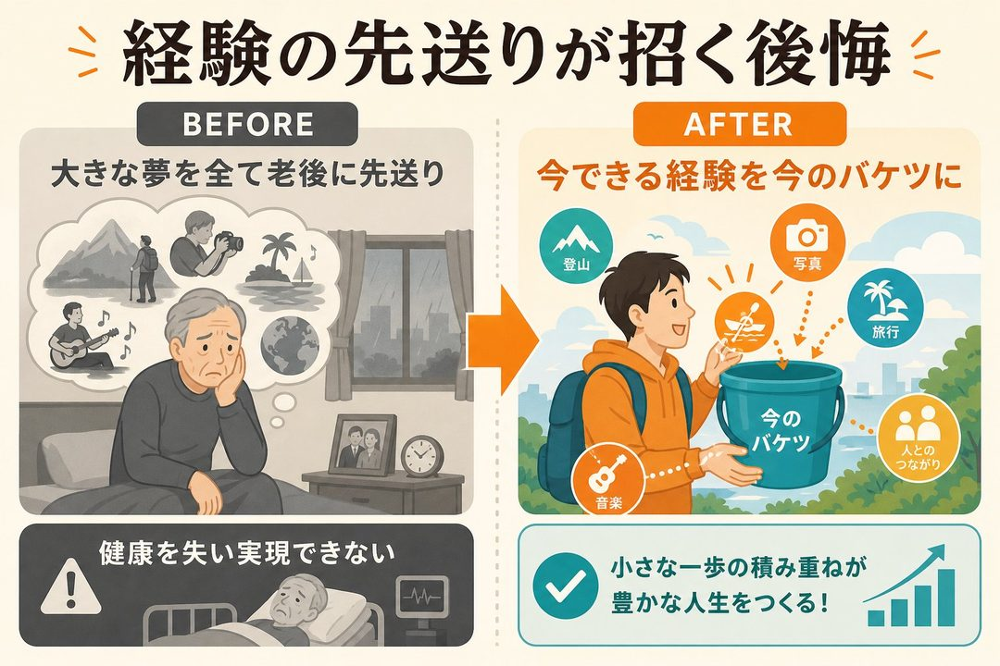
経験の先送りが招く後悔
だからこそ、タイムバケットでは、あえて勇気を持って、若い時期のバケツに、思い切って経験を配置していきます。
「まだお金に余裕がないから」とためらう気持ちは、痛いほどよくわかります。
けれど、二度と戻ってこない健康な時間を、経験に変えられないまま終わらせてしまうことのほうが、はるかに大きな損失なのです。
お金は、あとから取り戻せることもあります。
しかし、二十代の体力も、幼い子どもと過ごせる時間も、二度とは戻ってきません。
今のバケツに、何を入れるか。
それを真剣に決めることが、後悔のない人生への、いちばんの近道になります。
定期的に見直して更新する
最後に、タイムバケットを、一度きりで終わらせずに、長く役立て続けるためのコツをお伝えします。
それは、定期的に見直して、更新し続けることです。
人生は、計画したとおりには進みません。
仕事の状況も、家族の形も、健康状態も、そしてあなた自身の興味や関心も、時とともに移り変わっていきます。
数年前に心から望んでいたことが、今はそれほど魅力的に感じられなくなっているかもしれません。
逆に、当時はまったく考えもしなかった、新しくやりたいことが、心の中に芽生えていることもあるでしょう。
ですから、タイムバケットは、一度書いて引き出しにしまい込むものではなく、生き物のように、そのつど手入れをして育てていくものなのです。
見直しのときに、ぜひやってほしいことが一つあります。
それは、実現できた経験を、じっくり味わい直すことです。
チェックを入れて終わりにするのではなく、そのとき何を感じたか、誰と過ごしたかを、あらためて思い返してみる。
これは、まさに記憶の配当を受け取る行為そのものです。
過去の経験を振り返る時間は、新しい経験を計画する時間と同じくらい、あなたを幸せにしてくれます。
そして、その満たされた気持ちが、「次はこれをやってみよう」という前向きなエネルギーへとつながっていきます。
タイムバケットは、未来を計画する道具であると同時に、これまで歩んできた人生を、味わい直すためのアルバムでもあるのです。
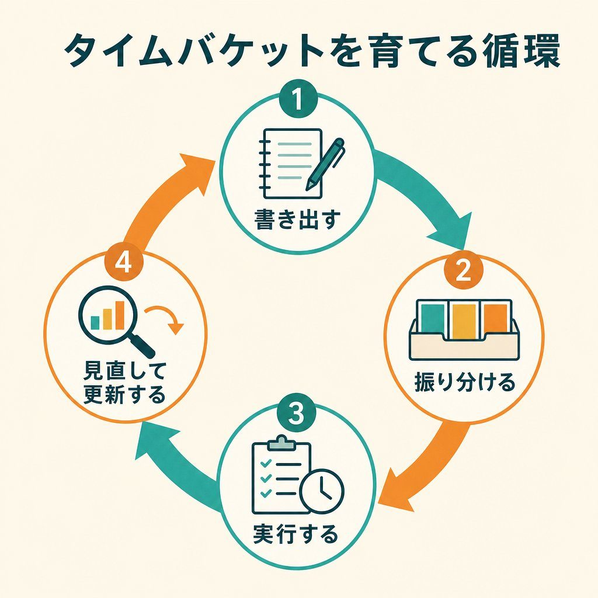
タイムバケットを育てる循環
おすすめは、たとえば毎年の誕生日や、年末年始、あるいは新年度の始まりなど、生活の節目のタイミングで見直すことです。
実現できた経験には、うれしい気持ちでチェックを入れ、新しく芽生えた願いを書き足し、状況に合わせて時期を調整する。
この小さな習慣を続けるだけで、あなたは自分の人生を、他人まかせや成り行きまかせではなく、自分の意思で選んでいる感覚を取り戻せます。
パーキンスの言葉でいえば、それは自動運転モードから抜け出し、自分の手でハンドルを握り直すことにほかなりません。
なお、タイムバケットは、一人でつくるだけでなく、家族やパートナーと一緒につくると、さらに大きな力を発揮します。
お互いのやりたいことを見せ合えば、「そんな夢を持っていたのか」と、あらためて相手を知るきっかけになります。
そして、共通のバケツに一緒に入れられる経験が見つかれば、それはそのまま、二人や家族の大切な計画になります。
人生の時間割を分かち合うことは、それ自体が、関係を深める豊かな時間です。
一人で抱え込まず、大切な人を巻き込んでみてください。
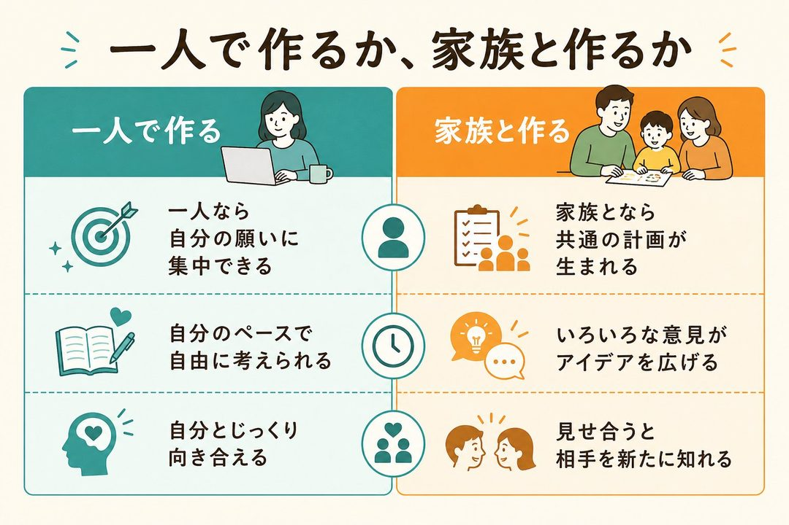
一人で作るか、家族と作るか
この章のまとめとして、今日からできる小さな一歩を提案します。
それは、たった一枚の紙に、あなたの年代の区切りを三つか四つ書き、それぞれに「やりたいこと」を、一つずつでいいので書き込んでみることです。
上手に書く必要も、完璧である必要も、まったくありません。
書き出した、まさにその瞬間から、あなたの「いつか」は、実現に向けて静かに動き出します。
06第5章 使いどきを逃さない人生設計──45〜60歳・生前贈与・今日の一歩
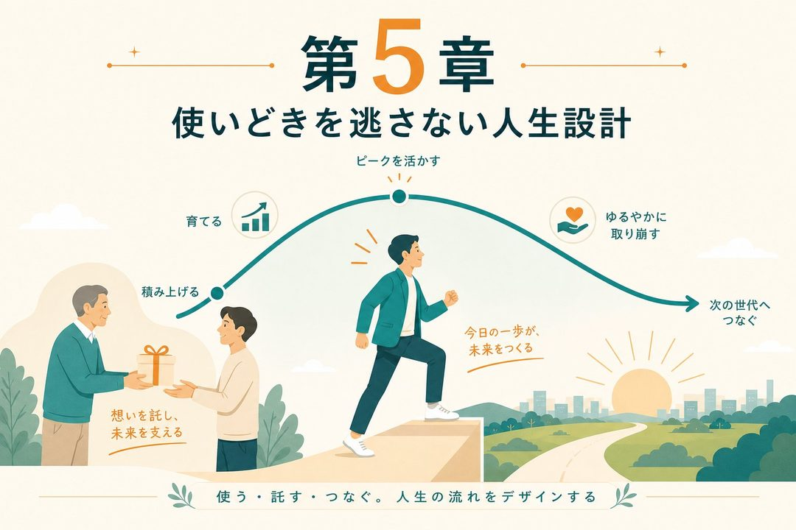
第5章 使いどきを逃さない人生設計
ここまで、お金を使えない心理、記憶の配当、三つの資源、そしてタイムバケットについて見てきました。
考え方の土台は、これでそろいました。
この最終章では、いよいよ、より具体的な人生設計の指針へと踏み込んでいきます。
いつから資産を使い始めればいいのか。
子どもや大切な人に、どのタイミングでお金を手渡すのがいいのか。
そして、この本の考え方をどう受け止め、明日ではなく今日から、いったい何を始めればいいのか。
一つ、大切なことを先にお伝えしておきます。
この章では、本書のよいところだけでなく、批判や注意点についても、包み隠さず正直にお話しします。
それは、あなたを迷わせるためではありません。
この刺激的な考え方を、安全に、そして誠実に、あなた自身の人生へ取り入れてもらうためです。
そのうえで、あなたにとって無理のない、バランスのとれた実践の形を、一緒に探していきましょう。
資産のピークは45〜60歳につくる
多くの人は、資産とは、死ぬまでずっと増やし続けるものだと、なんとなく信じています。
少しでも多く残すことが、正しいことだと感じている。
しかしパーキンスは、ここでもまた、まったく違う提案をします。
それは、資産を右肩上がりに増やし続けるのではなく、人生のどこかで意図的に「ピーク」をつくり、そこから先は、計画的に取り崩していく、という発想です。
山を登り続けるのではなく、頂上を決めて、そこから下りはじめる、というイメージです。
そして、そのピークを迎えるべき時期の目安として、パーキンスは45〜60歳という年齢帯を挙げています。
なぜこの時期なのか。
その理由は、これまでの章の内容と、きれいにつながっています。
この年代は、まだ健康がそれなりに保たれていて、なおかつ、お金にも余裕が出てくる。
つまり、経験を楽しむための力と、それを支えるお金とが、両方そろう貴重な時期だからです。
ここを過ぎて、取り崩しをずるずると先延ばしにしてしまうと、やがて健康を失い、せっかく築いた資産を、経験に変えられないまま終えることになってしまいます。
「取り崩す」と聞くと、不安を覚える方もいるでしょう。
せっかく築いた資産が減っていくのは、恐ろしいことのように感じられます。
けれど、思い出してください。
そもそも資産は、いつか使うために築いてきたはずです。
取り崩しとは、失敗でも後退でもなく、これまでの努力が実を結び、いよいよ収穫の時期を迎えた、ということなのです。
もちろん、無計画に減らすのではありません。
毎年どれくらいまでなら使っても生活が成り立つのかを見積もり、その範囲の中で、計画的に経験へと変えていく。
この「計画的な取り崩し」こそが、貯める技術と同じくらい、あるいはそれ以上に、大人に求められる大切な技術なのです。
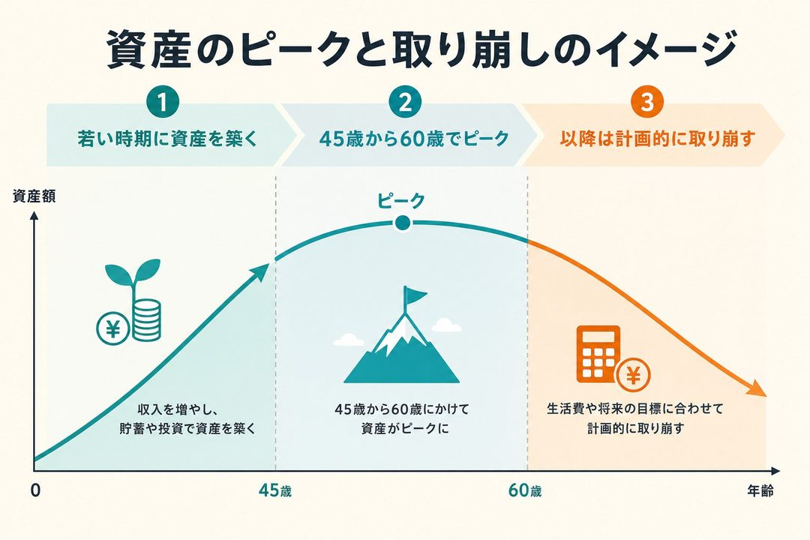
資産のピークと取り崩しのイメージ
もちろん、この45〜60歳という数字は、あくまで一つの目安にすぎません。
人によって、収入も、健康状態も、家族構成も、まったく違いますから、この年齢をそのまま、そっくり当てはめる必要はありません。
早い人もいれば、遅い人もいるでしょう。
ここで本当に大切なのは、年齢そのものではなく、資産は増やし続けるものではなく、いつか使い切るものだという、発想の転換のほうです。
この視点をひとつ持つだけで、「まだ足りない、もっと貯めなければ」という無限のループから、少しずつ自由になれます。
子どもには死ぬ「前」に与える
次に、家族へのお金の手渡し方について、考えてみましょう。
多くの人は、財産とは、自分が亡くなったあとに、相続という形で子どもに残すものだと考えています。
それが当たり前だと思っている。
しかしパーキンスは、ここにも一石を投じます。
子どもには、死ぬ前に与えるほうがいい、というのです。
その理由は、お金が本当に役立つタイミングにあります。
子どもがお金を最も切実に必要とするのは、独立して住まいを整えたり、結婚して家庭を築いたり、子育てに追われたりする、およそ26〜35歳の時期だと言われています。
人生でいちばんお金がかかり、いちばんお金があると助かる時期です。
ところが、親が寿命をまっとうしてから相続が発生すると、そのころには子どもがすでに六十代を迎えている、ということも、決して珍しくありません。
六十代になれば、多くの場合、その人自身の生活も落ち着いていて、お金の切実さは、若いころよりずっと薄れています。
同じ金額を渡すのでも、渡すタイミングによって、その価値は、驚くほど大きく変わってしまうのです。
生前に手渡すことには、金額の価値が高まる以上の意味もあります。
それは、渡した相手の喜ぶ顔を、自分の目で見られる、ということです。
相続では、あなたはもうこの世にいません。
せっかくのお金が、子どもや孫の役に立つ瞬間を、見届けることができないのです。
一方、生きているうちに手渡せば、そのお金が新しい家庭の助けになったり、孫の学びを支えたりする様子を、あなた自身が味わえます。
これもまた、一種の記憶の配当です。
誰かを助けたという経験は、お金を渡した本人の心にも、あたたかい思い出として残り続けます。
与えることは、実は、与える側にとっても、豊かな経験なのです。
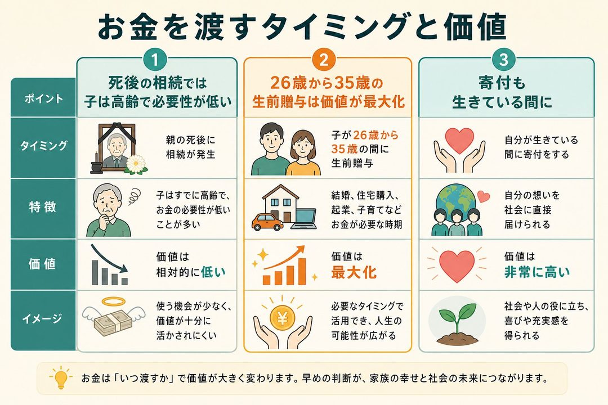
お金を渡すタイミングと価値
同じ考え方は、寄付にも当てはまります。
社会のために役立ててほしいお金があるのなら、生きているうちに手渡したほうが、そのお金がどう活かされたのかを、自分の目で確かめられます。
感謝の言葉を、直接受け取ることもできるでしょう。
ただし、ここで一つ注意が必要です。
生前贈与には、税金や法律のルールが関わってきますし、何よりもまず、あなた自身のこれからの生活を、しっかり守ることが大前提です。
自分の老後資金を削ってまで無理に渡す必要はありません。
ここでも大切なのは、渡す金額の大きさよりも、渡すタイミングを意識するという視点なのです。
批判もある。だからバランスよく
さて、ここで、本書に対する批判や注意点についても、正直にお話ししておきます。
良い面ばかりを並べるのは、誠実ではありません。
これらを知っておくことは、この考え方を安全に取り入れるうえで、とても役に立ちます。
最もよく聞かれる批判は、著者ビル・パーキンスが超富裕層である、という点です。
彼はヘッジファンドの運用で大きな成功を収め、莫大な資産を築いた人物として知られています。
だからこそ「お金は使い切っても大丈夫」と、余裕を持って言えるのであって、資産に限りのある一般の人が、同じことをそっくり真似すれば、老後に資金が尽きて破産しかねない、という指摘は、まったくもって的を射ています。
もう一つの、より根本的な批判は、いつ死ぬか誰にもわからないという、身もふたもない現実です。
ぴったりゼロで死ぬなどというタイミングは、そもそも誰にも読めません。
想定より長生きするリスクへの備えは、やはり、どうしても欠かせないのです。
加えて、正直に認めておくべきことがあります。
それは、この考え方は「理屈としては正しくても、実行するのが難しい」という点です。
頭では「経験にお金を使ったほうがいい」とわかっていても、いざ財布を開こうとすると、長年しみついた心理的な抵抗が、ぐっとブレーキをかけてきます。
第1章で見たとおり、その抵抗は、生存本能に近いところから来ているからです。
ですから、いきなり大きく変わろうとしなくて構いません。
大切なのは、正しい考え方を知ったうえで、自分のペースで、小さな行動から少しずつ慣らしていくことです。
完璧を目指すのではなく、昨日より少しだけ、お金を経験に変えられれば、それで十分に前進なのです。
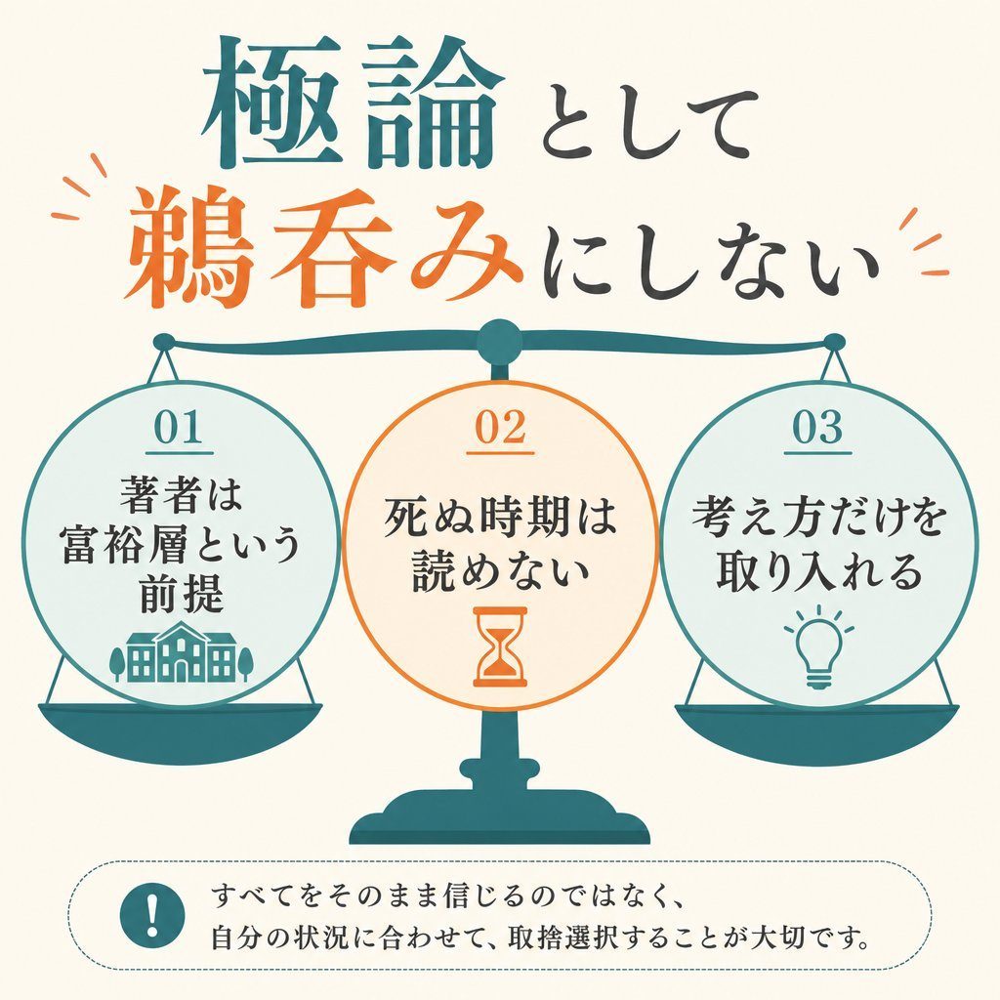
極論として鵜呑みにしない
では、私たちは、この本を、いったいどう受け止めればいいのでしょうか。
その答えは、はっきりしています。
極論として全部やるのではなく、考え方を取り入れてバランスよく実践することです。
将来への備えや、いざというときのための蓄えは、これまでどおり、しっかり大切にする。
そのうえで、貯めることだけが、いつのまにか目的になっていないかを問い直し、健康なうちに経験へお金を回すという視点を、少しずつ、無理のない範囲で加えていく。
この本の本当の価値は、具体的な金額のノウハウよりも、お金と人生の関係そのものを、根っこから見つめ直すきっかけをくれるところにあります。
使いすぎのブレーキも、貯めすぎのブレーキも、どちらも同じくらい大切なのです。
今日からできる小さな一歩
最後に、この本の考え方を、遠い未来の話で終わらせず、明日ではなく今日から、実際に動かしていくための、具体的な一歩を提案します。
壮大な計画も、大きな決断も、必要ありません。
大切なのは、小さくてもいいので、実際に一歩を踏み出してみることです。
まず、これまで「もったいない」とためらって見送ってきた経験の中から、比較的小さなものを、一つだけ選んで、実際にやってみてください。
ずっと気になっていたお店での、少しだけ贅沢な食事でもいい。
前から行きたかった場所への、日帰りの旅でもいい。
お金を経験に変える感覚を、頭で理解するだけでなく、まずは体で一度味わってみることが、すべての出発点になります。
次に、前の章でつくったタイムバケットを、もう一度開いてみましょう。
そして、今の年代のバケツに入れた経験のうち、どれか一つに、具体的な日付を入れてみてください。
日付が入った瞬間、あいまいだった「いつか」は、動かせない「予定」へと姿を変えます。
もう一つ、おすすめしたい習慣があります。
それは、月に一度でいいので、「経験のための予算」を、あらかじめ決めておくことです。
あくまで、生活費や貯蓄とは別の枠として、少額でかまいません。
この予算は「使い切ることが目的」のお金です。
使わずに余らせても、貯金には回しません。
こうして「使うためのお金」を、はっきり区切っておくと、いざ経験の機会が訪れたときに、罪悪感なく財布を開けるようになります。
ルールとして仕組み化してしまえば、そのつど悩む必要がなくなるのです。
小さな金額から始めて、心地よさを感じられたら、少しずつ枠を広げていく。
この積み重ねが、お金の使い方の体質を、無理なく変えていってくれます。
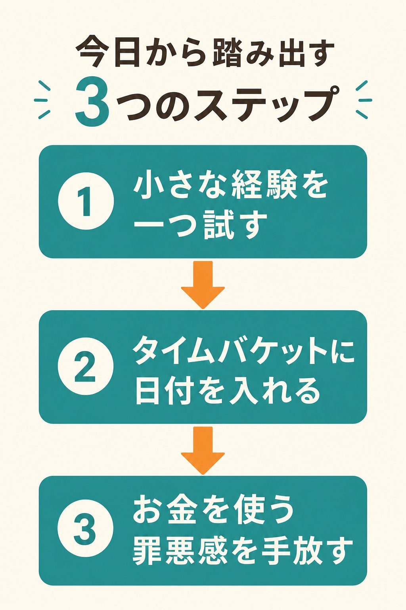
今日から踏み出す3つのステップ
そして何よりも、お金を自分自身の人生のために使うことへの罪悪感を、少しずつ、手放していってください。
あなたがこれまで、コツコツと積み上げてきた貯金は、我慢を重ねてきた苦労の証であると同時に、これからの人生を豊かに彩るために使える、大切なエネルギーの蓄えでもあります。
ただ守るためだけにあるのではありません。
その使いどきを、どうか逃さないでください。
完璧なタイミングを狙う必要はありません。
使いどきを見極めようとする、その意識そのものが、後悔のない人生設計の、いちばんの核心なのです。
07おわりに
おわりに 人生の使いどきを、自分の手で
ここまで読んでくださって、本当にありがとうございました。
最後に、この本でお伝えしてきたことを、あなたと一緒に、そっと振り返っておきたいと思います。
私たちは、お金を貯める方法なら、これまでたくさん学んできました。
けれど、それを上手に使い切る方法は、ほとんど誰からも教わってきませんでした。
そして多くの人が、漠然とした将来不安や、根深い罪悪感から、人生で一度きりしかない経験を、少しずつ、けれど確実に、先送りし続けています。
ビル・パーキンスの『DIE WITH ZERO』が私たちに投げかけたのは、お金は死ぬときに残すものではなく、生きている間に経験へ変えて使い切るものだ、という、静かで、しかし力強い問いでした。
その考え方の中心にあったのは、人生でいちばん大切な仕事は思い出づくりである、という一つのメッセージです。
経験は、記憶の配当となって、そのあとの人生を、何度も繰り返し豊かにしてくれます。
そして、お金・時間・健康という三つの資源は、年齢とともに絶えず移り変わっていくからこそ、経験には賞味期限があり、その使いどきを見極めることが、何よりも大切なのでした。
タイムバケットは、その見えにくい使いどきを、目に見える形にして、私たちの背中をそっと押してくれる道具でした。
もちろん、繰り返しお伝えしてきたように、この本の主張を、そっくりそのまま真似する必要はありません。
著者が富裕層であることや、死ぬ時期が誰にも読めないという現実を踏まえれば、将来への堅実な備えは、これからも大切にしていくべきです。
本書の本当の価値は、極端な結論そのものにあるのではなく、貯めることだけが目的になっていないかと、私たち一人ひとりに、静かに問い直させてくれるところにあります。
この本を閉じたあと、あなたの日常は、昨日と何も変わらないように見えるかもしれません。
会社に行き、仕事をこなし、家に帰る。
その繰り返しは、これまでと同じです。
けれど、お金と人生を見つめるあなたの視点は、ほんの少し変わったはずです。
通帳の数字を眺めるとき、旅行のパンフレットを手に取るとき、大切な人と過ごす休日に、心の片隅で「これが記憶の配当になる」と思えたなら、それだけで、この本は役目を果たしたことになります。
大きく生き方を変える必要はありません。
同じ日常の中で、選ぶものが少しずつ変わっていく。
その積み重ねが、やがて人生全体を、豊かな方向へと導いていきます。
もしこの本を読んで、心に何か引っかかるもの、少しでも動かされるものがあったなら、どうか一つだけでいいので、それを行動に移してみてください。
ずっと先延ばしにしてきたあの経験に、思い切って日付を入れる。
大切な人と過ごす時間を、ほんの少しだけ優先してみる。
ためらっていた小さな贅沢を、自分に許してみる。
その小さな一歩が、あなたを自動運転モードから少しずつ引き離し、自分の意思で、自分の人生を操縦しているという感覚を、きっと取り戻させてくれるはずです。
あなたの通帳に並んだ数字は、ただの我慢の記録ではありません。
それは、これからのあなたの人生を、色鮮やかに彩っていく経験へと変えられる、豊かな可能性の蓄えです。
貯めたお金、使えていますか。
この問いへの答えは、どこかの正解の中にあるのではなく、これからのあなた自身の生き方の中に、少しずつ描かれていきます。
あなたの人生に、後悔ではなく、かけがえのない思い出が、あふれるほど満ちていくことを、心から願っています。
◀ 他の書籍を見る© 竹谷知悦 / 特別プレゼント版